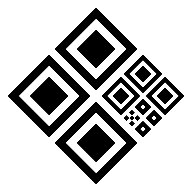

QR PIX
Versão 1.0.0
O que é
Gerador de QR Code e código Copia e Cola para pagamentos PIX.
Funciona completamente offline após a primeira abertura e pode ser instalado como aplicativo no seu celular.
Como usar
- 1Cadastre uma chave PIX com os dados do beneficiário.
- 2Toque na chave salva para gerar o QR Code.
- 3Defina um valor (opcional) e confirme.
- 4Compartilhe o código ou salve a imagem do QR.
Privacidade
Nenhum dado é enviado a servidores externos. Todas as informações ficam armazenadas apenas no seu dispositivo (localStorage).
Desenvolvedor
Desenvolvido com fins educacionais. Código aberto e gratuito.